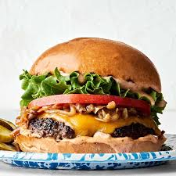

En saftig hemlagad burgare slår alltid snabbmaten. Följ receptet nedan och fixa en riktig klassiker hemma.

Ingredienser för en vanlig burgare
- Hamburgerbröd
- Hamburgerkött (nötfärs, 150 g)
- Ost (cheddar)
- Sallad
- Tomat
- Lök
- Dressing
Kalorier i vanliga burgaringredienser
| Ingrediens |
Mängd |
Kalorier (ca) |
| Hamburgerbröd |
1 st |
150 kcal |
| Hamburgerkött (nötfärs) |
150 g |
330 kcal |
| Cheddarost |
1 skiva (20 g) |
80 kcal |
| Sallad |
20 g |
5 kcal |
| Tomat |
50 g |
10 kcal |
| Lök |
30 g |
15 kcal |
| Dressing |
20 g |
70 kcal |
Steg för att göra en burgare
- Blanda nötfärs med salt och peppar, forma till en biff.
- Stek biffen i stekpanna eller på grill tills genomstekt.
- Lägg ostskivan på biffen mot slutet så den smälter.
- Rosta bröden lätt i pannan eller i ugnen.
- Bred dressing på bröden.
- Lägg sallad, tomat och lök på bottenbrödet.
- Lägg på köttbiffen med ost.
- Toppa med överdelen av brödet – klart!